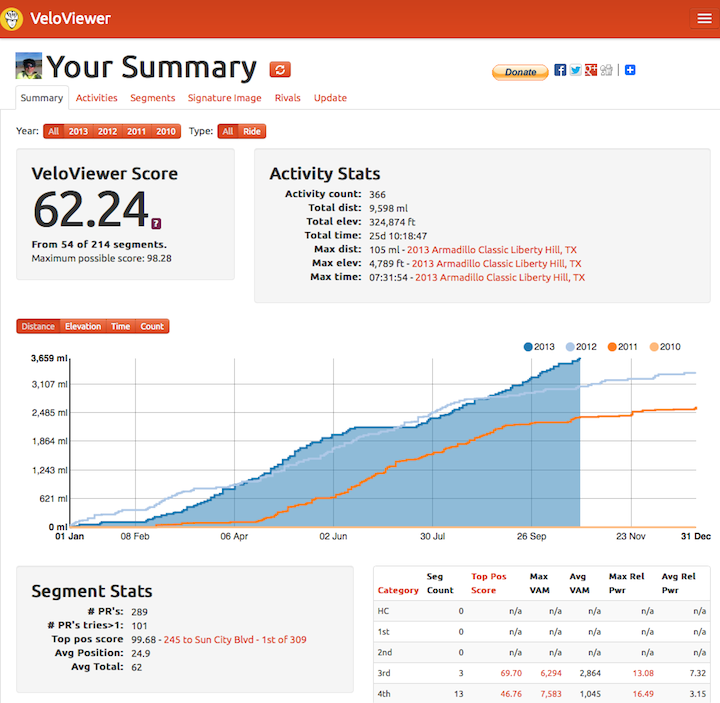

F-40 One thousand miles impressions
21 Oct 2013
Yesterday strava says that I now have 1,002 miles on my F-40.
The F-40 is by far the most difficult bike I have learned how to ride.
My other bikes were all easy to learn to ride compared to the F-40.
| Bike | Type | Miles |
|---|---|---|
| Catrike Expedition | trike | 2,750 |
| Catrike Musashi | mid-racer | 4,500 |
| Optima Baron | low-racer | 1,000 |
| Lightning P-38 | SWB | 250 |
| Lightning F-40 | SWB w/fairing | 1,000 |
I am just now becoming comfortable enough with the bike that I can have a relaxing ride.
The first couple of hundred of miles were spent learning to just be safe on the bike.
The main learning requirements have to do with wind management and wind reflexes.
Because the bike is so fast, you must learn how to take the lane when necessary.
I am just now becoming comfortable cruising at 30 mph and greater. If the winds become greater than 12 mph it is best to keep the speed under 25 mph.
Of course the bike really helps with the Strava KOMs:

http://veloviewer.com/athlete/1849456/
